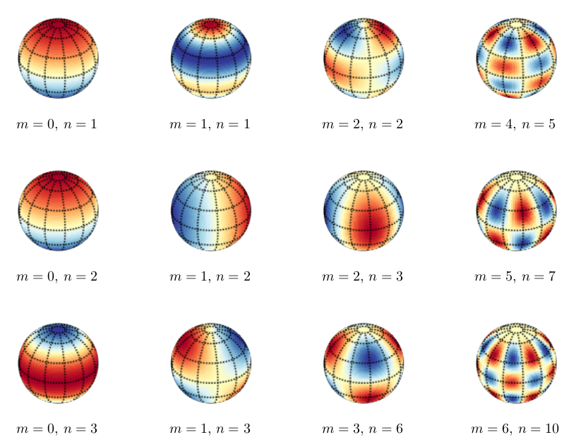

Angular momentum#
What you need to know
Angular momentum plays a central role in both classical and quantum mechanics. In classical mechanics, all isolated systems conserve angular momentum (as well as energy and linear momentum); this fact orangeuces considerably the amount of work required in calculating trajectories of planets, rotation of rigid bodies, and many more.
Similarly, in quantum mechanics, angular momentum plays a central role in understanding the structure of atoms, as well as other quantum problems that involve rotational symmetry. Like other observable quantities, angular momentum is described in QM by an operator. This is in fact a vector operator, similar to momentum operator. However, contrary to the linear momentum operator, the three components of the angular momentum operator do not commute!
In QM, there are several angular momentum operators: the total angular momentum (usually denoted by \(J\)), the orbital angular momentum (usually denoted by \(L\) ) and the intrinsic, or spin angular momentum (denoted by \(S\)). This spin has no classical analogue! Confusingly, the term “angular momentum” can refer to either the total angular momentum, or to the orbital angular momentum.
L vs p Overview#
Property |
Linear Momentum |
Angular Momentum |
|---|---|---|
Nature |
Linear motion in a straight line |
Rotational motion around an axis |
Vector form |
\(\vec{p} = m \cdot \vec{v}\) |
\(\vec{L} = \vec{p}\times\vec{r}\) |
Scalar form |
\( |\vec{p}| = m \cdot v\) |
\( |\vec{L}| = I \cdot \omega\) |
Mass for point particles |
\(m\) |
\(I=mr^2\) |
Kinetic Energy |
\(\frac{p^2}{2m}\) |
\(\frac{L^2}{2I}\) |
QM operators |
\(\hat{p_x}=-i\hbar\frac{\partial}{\partial x}\) |
\({\hat{L_x} = yp_z - zp_y}\) |
Conservation Principle |
Law of Conservation of Linear Momentum |
Law of Conservation of Angular Momentum |
Conservation Condition |
No net external force acting on a closed system |
No net external torque acting on a closed system |
Classical angular momentum#
{kind=link}
Fig. 63 Angular momemntum in classical mechanics is a vector quantity defined by the cross product of position vector and linear momentum. Direction is determined by using the thumb rule.#
In classical mechanics, the angular momentum is defined via a corss product of position and linear momentum. The cross product is convenient to write using a determinant:
where \(\vec{i}, \vec{j}\) and \(\vec{k}\) denote unit vectors along the \(x, y\) and \(z\) axes. \(p_x\) and \(L_x\) are components of linear and angular momentum respectively
The Cartesian components of angular momentum can be identified as:
The square of the angular momentum is given by:
Spherical coordinates#
Spherical coordinates are more convenient for rotational problems. We therefore replace \((x,y,z)\) by \((r, \phi, \theta)\). For instance: when considering rotation with \(r=const\) we are able to eliminate one degree of freedom associated with radial direction.
{kind=link}
Fig. 64 Since we are going to work in spherical coordinate system we need to know how operators look in differnet cooridnate systems. This figure shows a rectangular volume element expressed in spherical coordinates.#
Geometric relations
The range of spherical variables
Volume Element
Laplacian
Example
Compute volume of cube and sphere using cartesian and spherical cooridnates by integrating volume elements
Solution
Example
Write down laplacian for a rigid rotor problem \(r=const\). Show what equations result when you separate the two angular variables by pluggin in \(\psi(r, \theta, \phi)\)
Solution
Quantum angular momentum#
In quantum mechanics, the classical angular momentum is replaced by the corresponding quantum mechanical operator.
In spherical coordinates, the angular momentum operators can be written in the following form. The derivations are quite tedious involving multiple applications of chain rule but its just a straightforward math procedure. Note that the choice of \(z\)-axis here was arbitrary. Sometimes the physical system implies such axis naturally (for example, the direction of an external magnetic field).
Commutation relations#
The following commutation relations can be shown to hold:
Note that equations imply that it is not possible to measure any of the Cartesian angular momentum pairs simultaneously with an infinite precision (the Heisenberg uncertainty relation).
Eignefunctins and eigenvalues of \(L\) and \(L_z\)#
It is possible to find functions that are eigenfunctions of both \(\vec{\hat{L}}^2\) and \(\hat{L}_z\). It can be shown that for \(\vec{\hat{L}}^2\) the eigenfunctions and eigenvalues are:
Wavefunction: \(\psi_{l,m} = Y_l^m(\theta,\phi)\)
Angular quantum number: \(l = 0,1,2,3...\)
Magnetic quantum number: \(|m| = 0,1,2,3,...l\)
These eigenvalues are often denoted by \(L_z\) (\(= m\hbar\)). Note that specification of both \(L^2\) and \(L_z\) provides all the information we can have about the system.
Note that here \(m\) has nothing to do with magnetism but the name originates from the fact that (electron or nuclear) spins follow the same laws of angular momentum.
Functions \(Y_l^m\) are called spherical harmonics. Examples of spherical harmonics with various values of \(l\) and \(m\) are given below (with Condon-Shortley phase convention
Spherical harmonics#
\(Y_{lm}(\theta, \phi)\) |
Expression |
|---|---|
\(Y_{00}(\theta, \phi)\) |
\(\frac{1}{\sqrt{4\pi}}\) |
\(Y_{10}(\theta, \phi)\) |
\(\sqrt{\frac{3}{4\pi}} \cos(\theta)\) |
\(Y_{1-1}(\theta, \phi)\) |
\(\sqrt{\frac{3}{4\pi}} \sin(\theta) e^{-i\phi}\) |
\(Y_{20}(\theta, \phi)\) |
\(\sqrt{\frac{5}{16\pi}} (3\cos^2(\theta) - 1)\) |
\(Y_{2-1}(\theta, \phi)\) |
\(\sqrt{\frac{15}{4\pi}} \sin(\theta) \cos(\theta) e^{-i\phi}\) |
\(Y_{2-2}(\theta, \phi)\) |
\(\sqrt{\frac{15}{4\pi}} \sin^2(\theta) e^{-2i\phi}\) |
The functions \(Y_{J,m}(\theta,\phi)\) are spherical harmonics that frequently occur in problems with spherical symmetry as the convenient basis of expansion. Spherical harmonics are important in many theoretical and practical applications, e.g., the representation of multipole electrostatic and electromagnetic fields, computation of atomic orbital electron configurations, representation of gravitational fields, MRI imaging for streamline tractography, and the magnetic fields of planetary bodies and stars.

Spherical harmonics consist of a well known special functions called associated Legendre polynomials (\(\theta\) part) times the complex exponential (\(\phi\) part).
In physics, spherical harmonics are defined on the surface of a sphere form a complete basis set.
Spherical harmonics can be used to represent functions defined on the surface of a sphere, just as circular functions (sines and cosines) are used to represent functions on a circle via Fourier series. Like the sines and cosines in the Fourier series, the spherical harmonics may be organized by (spatial) angular frequency.
Orthogonality
Visualizing spherical harmonics#
Mathematically, the spherical harmonics contain alternating odd and even pairs of Legendre polynomials similar to Hermite polynomials.
Visually, the spherical harmonics clearly show nodal lines with increasing quantum numbers, a pattern that we have seen on the examples of a particle in a box and harmonic oscillator.
Using the symmetry argument, one can already tell that the product of any two different spherical harmonics integrated over the sphere will be zero!